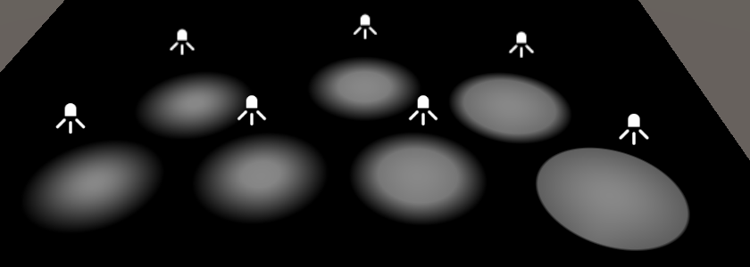
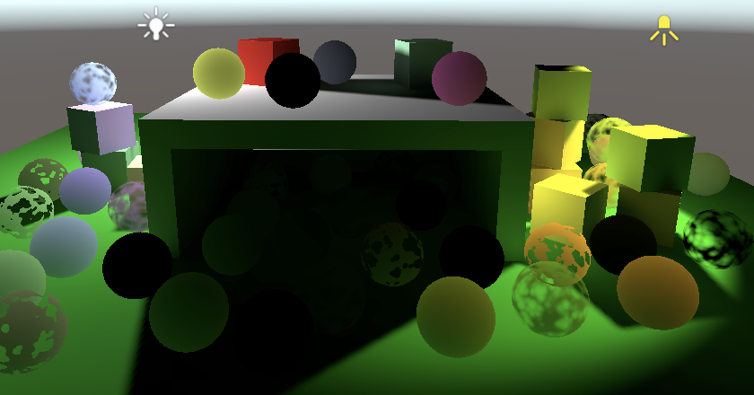
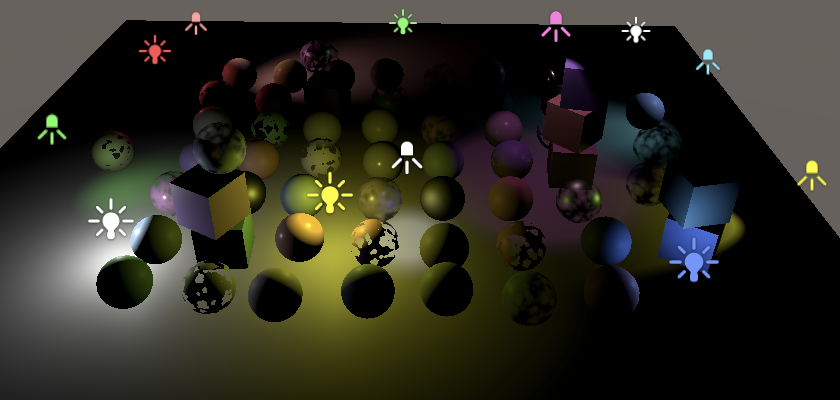

Point and Spot Lights
Lights with Limited Influence
- Support more light types than only directional.
- Include realtime point and spot lights.
- Bake lighting and shadows for point and spot lights.
- Limit rendering to max 8 other lights per object.
This is the ninth part of a tutorial series about creating a custom scriptable render pipeline. It adds support for both realtime and baked point and spot lights, but no realtime shadows yet.
This tutorial is made with Unity 2019.2.21f1.
Point Lights
We've only worked with directional lights so far because those lights affect everything and have unlimited range. Other light types are different. They're not assumed to be infinitely far away, thus they have a position and the intensity varies. This requires extra work to set up and render, which is why we'll create separate code for that. We start with point lights, which are infinitely small points that shed light in all directions equally.
Other Light Data
Like with directional lights, we can only support a limited amount of other lights. Scenes often contain a lot of lights that aren't directional, because their effective range is limited. Usually only a subset of all other lights are visible for any given frame. The maximum we can support thus applies to a single frame, not to the entire scene. If we end up with more visible lights than the maximum some will simply be omitted. Unity sorts the visible light list based on importance, so which lights get omitted is consistent as long as the visible lights don't change. But if they do change—either due to camera movement or some other change— this can result in obvious light popping. So we don't want to use a maximum that is too low. Let's allow up to 64 simultaneous other lights, defined as another constant in Lighting.
const int maxDirLightCount = 4, maxOtherLightCount = 64;
Just like for directional lights, we need to send the light count and light colors to the GPU for the other light types. In this case we also need to send the light positions. Add shader property names and vector array fields to make this possible.
static int
otherLightCountId = Shader.PropertyToID("_OtherLightCount"),
otherLightColorsId = Shader.PropertyToID("_OtherLightColors"),
otherLightPositionsId = Shader.PropertyToID("_OtherLightPositions");
static Vector4[]
otherLightColors = new Vector4[maxOtherLightCount],
otherLightPositions = new Vector4[maxOtherLightCount];
In SetupLights, keep track of the other light count along with the directional light count. After looping over the visible lights, send all data to the GPU. But we don't need to bother with sending the arrays if we end up with zero other lights. Also, it can now also make sense to only have other lights and no directional lights, so we might skip sending the directional arrays as well. We do always need to send the light counts.
void SetupLights () {
NativeArray<VisibleLight> visibleLights = cullingResults.visibleLights;
int dirLightCount = 0, otherLightCount = 0;
for (int i = 0; i < visibleLights.Length; i++) {
…
}
buffer.SetGlobalInt(dirLightCountId, dirLightCount);
if (dirLightCount > 0) {
buffer.SetGlobalVectorArray(dirLightColorsId, dirLightColors);
buffer.SetGlobalVectorArray(dirLightDirectionsId, dirLightDirections);
buffer.SetGlobalVectorArray(dirLightShadowDataId, dirLightShadowData);
}
buffer.SetGlobalInt(otherLightCountId, otherLightCount);
if (otherLightCount > 0) {
buffer.SetGlobalVectorArray(otherLightColorsId, otherLightColors);
buffer.SetGlobalVectorArray(
otherLightPositionsId, otherLightPositions
);
}
}
On the shader side, define the other light max and new data in Light as well.
#define MAX_DIRECTIONAL_LIGHT_COUNT 4 #define MAX_OTHER_LIGHT_COUNT 64 CBUFFER_START(_CustomLight) int _DirectionalLightCount; float4 _DirectionalLightColors[MAX_DIRECTIONAL_LIGHT_COUNT]; float4 _DirectionalLightDirections[MAX_DIRECTIONAL_LIGHT_COUNT]; float4 _DirectionalLightShadowData[MAX_DIRECTIONAL_LIGHT_COUNT]; int _OtherLightCount; float4 _OtherLightColors[MAX_OTHER_LIGHT_COUNT]; float4 _OtherLightPositions[MAX_OTHER_LIGHT_COUNT]; CBUFFER_END
And let's already define a GetOtherLightCount function that we'll need to use later.
int GetOtherLightCount () {
return _OtherLightCount;
}
Point Light Setup
Create a SetupPointLight method in Lighting to set up the color and position for a point light. Give it the same parameters as SetupDirectionalLight. The color is set the same way. The position works like the directional light's direction, except that we need the last column of the local-to-world matrix instead of the third.
void SetupPointLight (int index, ref VisibleLight visibleLight) {
otherLightColors[index] = visibleLight.finalColor;
otherLightPositions[index] = visibleLight.localToWorldMatrix.GetColumn(3);
}
Now we have to adjust the loop in SetupLights so it distinguishes between directional and point lights. We should no longer end the loop once we reach the maximum amount of directional lights. Instead, we skip further directional lights and keep going. And we have to do the same for point lights, taking the max for other lights into account. Let's use a switch statement to program this.
for (int i = 0; i < visibleLights.Length; i++) {
VisibleLight visibleLight = visibleLights[i];
//if (visibleLight.lightType == LightType.Directional) {
// SetupDirectionalLight(dirLightCount++, ref visibleLight);
// if (dirLightCount >= maxDirLightCount) {
// break;
// }
//}
switch (visibleLight.lightType) {
case LightType.Directional€:
if (dirLightCount < maxDirLightCount) {
SetupDirectionalLight(dirLightCount++, ref visibleLight);
}
break;
case LightType.Point:
if (otherLightCount < maxOtherLightCount) {
SetupPointLight(otherLightCount++, ref visibleLight);
}
break;
}
}
Shading
All data necessary to support point lights is now available to the shader. To make use of it we add a GetOtherLight function to Light, with the same parameters as GetDirectionalLight. In this case the light's direction varies per fragment. We find it by normalizing the light ray from the surface position to the light. We don't support shadows at this point, so the attenuation is 1.
Light GetOtherLight (int index, Surface surfaceWS, ShadowData shadowData) {
Light light;
light.color = _OtherLightColors[index].rgb;
float3 ray = _OtherLightPositions[index].xyz - surfaceWS.position;
light.direction = normalize(ray);
light.attenuation = 1.0;
return light;
}
To apply the new lighting add a loop for all other lights after the one for directional lights in GetLighting. Although the loops are separate, we have to use a different name for their iterator variables, other we'll get shader compiler warnings in some cases. So I use j instead of i for the second one.
float3 GetLighting (Surface surfaceWS, BRDF brdf, GI gi) {
ShadowData shadowData = GetShadowData(surfaceWS);
shadowData.shadowMask = gi.shadowMask;
float3 color = IndirectBRDF(surfaceWS, brdf, gi.diffuse, gi.specular);
for (int i = 0; i < GetDirectionalLightCount(); i++) {
Light light = GetDirectionalLight(i, surfaceWS, shadowData);
color += GetLighting(surfaceWS, brdf, light);
}
for (int j = 0; j < GetOtherLightCount(); j++) {
Light light = GetOtherLight(j, surfaceWS, shadowData);
color += GetLighting(surfaceWS, brdf, light);
}
return color;
}
Distance Attenuation
Our point lights are now functional, but they are far too bright. As light travels away from its source it spreads out, becoming less concentrated and thus less bright the further it goes. The light's intensity is `i/d^2` where `i` is the configured intensity and `d` is the distance. This is known as the inverse-square law. Note that this means that at a distance less than 1 the intensity is greater than configured. It get extremely bright very close to the light's position. Earlier we inferred that the final light color that we use represents the amount observed when reflected from a perfectly white diffuse surface fragment illuminated head-on. This is true for directional lights, but for other light types it's also specifically for fragments that are exactly at distance 1 from the light.
Apply the distance attenuation by calculating the square light distance and use the inverse of that as attenuation. To prevent a potential division by zero, set the minimum of the square distance to a tiny positive value.
float distanceSqr = max(dot(ray, ray), 0.00001); light.attenuation = 1.0 / distanceSqr;
Light Range
Although the point light intensity now quickly attenuates, their light still theoretically affects everything, even though it is usually not perceivable. Diffuse reflections become unnoticeable fast, while specular reflections are still visible at greater distances.
To make rendering practical, we'll use a maximum light range, beyond which we force the light intensity to zero. This isn't realistic, but otherwise all lights would always count as visible, no matter their distance. With an added range the point lights are contained by a bounding sphere, defined by their position and range.
We don't suddenly cut off the light at the sphere's boundary, instead we'll smoothly fade it out by aplying a range attenuation. Unity's Universal RP and lightmapper use `max(0, 1-(d^2/r^2)^2)^2` where `r` is the light range, so we'll use the same function as well.

We can store the range in the fourth component of the light position. To reduce work in the shader, store `1/r^2` instead, again making sure to avoid a division by zero.
void SetupPointLight (int index, ref VisibleLight visibleLight) {
otherLightColors[index] = visibleLight.finalColor;
Vector4 position = visibleLight.localToWorldMatrix.GetColumn(3);
position.w =
1f / Mathf.Max(visibleLight.range * visibleLight.range, 0.00001f);
otherLightPositions[index] = position;
}
Then include the range attenuation in GetOtherLight.
float distanceSqr = max(dot(ray, ray), 0.00001); float rangeAttenuation = Square( saturate(1.0 - Square(distanceSqr * _OtherLightPositions[index].w)) ); light.attenuation = rangeAttenuation / distanceSqr;
Spot Lights
We'll also support spot lights. The difference between a point and a spot light is that the latter's light is restricted to a cone. Effectively, it's a point light that's enclosed by an occluding sphere with a hole in it. The size of the hole determines the size of the light cone.
Direction
A spot light has a direction as well as a position, so add a shader property name and array for directions of other lights to Lighting.
static int
otherLightCountId = Shader.PropertyToID("_OtherLightCount"),
otherLightColorsId = Shader.PropertyToID("_OtherLightColors"),
otherLightPositionsId = Shader.PropertyToID("_OtherLightPositions"),
otherLightDirectionsId = Shader.PropertyToID("_OtherLightDirections");
static Vector4[]
otherLightColors = new Vector4[maxOtherLightCount],
otherLightPositions = new Vector4[maxOtherLightCount],
otherLightDirections = new Vector4[maxOtherLightCount];
Send the new data to the GPU in SetupLights.
buffer.SetGlobalVectorArray( otherLightPositionsId, otherLightPositions ); buffer.SetGlobalVectorArray( otherLightDirectionsId, otherLightDirections );
Create a SetupSpotLight method that's a copy of SetupPointLight, except that it also stores the light direction. We can use the negated third column of the local-to-world matrix for this, similar to directional lights.
void SetupSpotLight (int index, ref VisibleLight visibleLight) {
otherLightColors[index] = visibleLight.finalColor;
Vector4 position = visibleLight.localToWorldMatrix.GetColumn(3);
position.w =
1f / Mathf.Max(visibleLight.range * visibleLight.range, 0.00001f);
otherLightPositions[index] = position;
otherLightDirections[index] =
-visibleLight.localToWorldMatrix.GetColumn(2);
}
Then include a case for spot lights in the SetupLights loop.
case LightType.Point:
if (otherLightCount < maxOtherLightCount) {
SetupPointLight(otherLightCount++, ref visibleLight);
}
break;
case LightType.Spot:
if (otherLightCount < maxOtherLightCount) {
SetupSpotLight(otherLightCount++, ref visibleLight);
}
break;
On the shader side, add the new data to the buffer in Light.
float4 _OtherLightPositions[MAX_OTHER_LIGHT_COUNT]; float4 _OtherLightDirections[MAX_OTHER_LIGHT_COUNT];
And apply the spot attenuation in GetOtherLight. We start by simply using the saturated dot product of the spot and the light direction. That will attenuate the light so it reaches zero at a 90° spot angle, illuminating everything in front of the light.
float spotAttenuation = saturate(dot(_OtherLightDirections[index].xyz, light.direction)); light.attenuation = spotAttenuation * rangeAttenuation / distanceSqr;
Spot Angle
Spot lights have an angle to control how wide their light cone is. This angle is measured from its middle, so a 90° angle would look like what we have right now. Besides that, there's also a separate inner angle that controls when the light starts attenuating. The Universal RP and lightmapper do this by scaling and adding something to the dot product before saturating, then squaring the result. Specifically, the formula is `saturate(da + b)^2` where `d` is the dot product, `a=1/(cos(r_i/2)-cos(r_o/2))` and `b=-cos(r_o/2)a`. Here `r_i` and `r_o` and the inner and outer angles, in radians.
The function can also be written as `saturate((d-cos(r_o/2))/(cos(r_i/2)-cos(r_o/2)))^2` but is decomposed this way so we can calculate `a` and `b` in Lighting and send them to the shader via a new spot angles array. So define the array and its property name.
static int
otherLightCountId = Shader.PropertyToID("_OtherLightCount"),
otherLightColorsId = Shader.PropertyToID("_OtherLightColors"),
otherLightPositionsId = Shader.PropertyToID("_OtherLightPositions"),
otherLightDirectionsId = Shader.PropertyToID("_OtherLightDirections"),
otherLightSpotAnglesId = Shader.PropertyToID("_OtherLightSpotAngles");
static Vector4[]
otherLightColors = new Vector4[maxOtherLightCount],
otherLightPositions = new Vector4[maxOtherLightCount],
otherLightDirections = new Vector4[maxOtherLightCount],
otherLightSpotAngles = new Vector4[maxOtherLightCount];
Copy the array to the GPU in SetupLights.
buffer.SetGlobalVectorArray( otherLightDirectionsId, otherLightDirections ); buffer.SetGlobalVectorArray( otherLightSpotAnglesId, otherLightSpotAngles );
And calculate the values in SetupSpotLight, storing them in the X and Y components of the spot angles array. The outer angle is made available via the spotAngle property of the VisibleLight struct. However, for the inner angle we need to first retrieve the Light game object via its light property, which in turn has an innerSpotAngle property.
void SetupSpotLight (int index, ref VisibleLight visibleLight) {
…
Light light = visibleLight.light;
float innerCos = Mathf.Cos(Mathf.Deg2Rad * 0.5f * light.innerSpotAngle);
float outerCos = Mathf.Cos(Mathf.Deg2Rad * 0.5f * visibleLight.spotAngle);
float angleRangeInv = 1f / Mathf.Max(innerCos - outerCos, 0.001f);
otherLightSpots[index] = new Vector4(
angleRangeInv, -outerCos * angleRangeInv
);
}
Back to the shader, add the new array in Light.
float4 _OtherLightDirections[MAX_OTHER_LIGHT_COUNT]; float4 _OtherLightSpotAngles[MAX_OTHER_LIGHT_COUNT];
And adjust the spot attenuation in GetOtherLight.
float4 spotAngles = _OtherLightSpotAngles[index]; float spotAttenuation = Square( saturate(dot(_OtherLightDirections[index].xyz, light.direction) * spotAngles.x + spotAngles.y) ); light.attenuation = spotAttenuation * rangeAttenuation / distanceSqr;
Finally, to make sure that point lights aren't affected by the angle attenuation calculation set their spot angle values to 0 and 1.
void SetupPointLight (int index, ref VisibleLight visibleLight) {
…
otherLightSpotAngles[index] = new Vector4(0f, 1f);
}
Configuring Inner Angles
Spot lights always had a configurable outer angle, but a separate inner angle didn't exist until the Universal RP was introduced. As a result the default inspector for lights doesn't expose the inner angle. RPs could modify lights further, so it's possible to override the default inspector for lights. That's done by creating an editor script that extends LightEditor and giving it the CustomEditorForRenderPipeline attribute. The first argument of this attribute must be the Light type. The second argument must be the type of the RP asset for which we want to override the inspector. Let's create such a script, name it CustomLightEditor, and put it in the Custom RP / Editor folder. Also give it the CanEditMultipleObjects so it works with multiple lights selected.
using UnityEngine;
using UnityEditor;
[CanEditMultipleObjects]
[CustomEditorForRenderPipeline(typeof(Light), typeof(CustomRenderPipelineAsset))]
public class CustomLightEditor : LightEditor {}
To replace the inspector we have to override the OnInspectorGUI method. But we're going to do the minimum amount of work to expose the inner angle, so we begin by invoking the base method to draw the default inspector as normal.
public override void OnInspectorGUI() {
base.OnInspectorGUI();
}
After that we check whether only spot lights are selected. We can do so via a convenient subclass property named settings, which provides access to the serialized properties of the editor selection. Use it to check that we don't have multiple different light types and that the type is LightType.Spot. If so, invoke DrawInnerAndOuterSpotAngle on the setting to add an inner-outer spot angle slider underneath the default inspector. Afterwards, invoke ApplyModifiedProperties to apply any changes made with that slider.
base.OnInspectorGUI();
if (
!settings.lightType.hasMultipleDifferentValues &&
(LightType)settings.lightType.enumValueIndex == LightType.Spot
)
{
settings.DrawInnerAndOuterSpotAngle();
settings.ApplyModifiedProperties();
}

Baked Light and Shadows
We won't cover realtime shadows for point and spot lights in this tutorial, but we will support baking these light types now.
Fully Baked
Fully baking point and spot lights is simply a matter of setting their Mode to Baked. Note that their Shadow Type is set to None by default, so change that to something else if you want them to be baked with shadows.

Although this is enough to bake these lights, it turns out that they are far too bright when baked. This happens because Unity uses an incorrect light falloff by default, matching the results of the legacy RP.
Lights Delegate
We can tell Unity to use a different falloff, by providing a delegate to a method that should get invoked before Unity performs lightmapping in the editor. To do so, turn CustomRenderPipeline into a partial class and invoke a currently nonexistent InitializeForEditor method at the end of its constructor.
public partial class CustomRenderPipeline : RenderPipeline {
…
public CustomRenderPipeline (
bool useDynamicBatching, bool useGPUInstancing, bool useSRPBatcher,
ShadowSettings shadowSettings
) {
…
InitializeForEditor();
}
…
}
Then create another editor-specific partial class for it—just like for CameraRenderer—that defines an dummy for the new method. Besides the UnityEngine namespace, we also need to use Unity.Collections and UnityEngine.Experimental.GlobalIllumination. This will cause a type clash for LightType, so explicitly use the UnityEngine.LightType for it.
using Unity.Collections;
using UnityEngine;
using UnityEngine.Experimental.GlobalIllumination;
using LightType = UnityEngine.LightType;
public partial class CustomRenderPipeline {
partial void InitializeForEditor ();
}
For the editor only, we have to override how the lightmapper sets up its light data. That's done by providing it with a delegate to a method that transfers data from an input Light array to a NativeArray<LightDataGI> output. The delegate's type is Lightmapping.RequestLightsDelegate and we'll define the method with a lambda expression as we won't need it anywhere else.
partial void InitializeForEditor ();
#if UNITY_EDITOR
static Lightmapping.RequestLightsDelegate lightsDelegate =
(Light[] lights, NativeArray<LightDataGI> output) => {};
#endif
We have to configure a LightDataGI struct for each light and add it to the output. We'll have to use special code for each light type, so use a switch statement in a loop for this. By default we invoke InitNoBake with the light's instance ID on the light data, which instructs Unity to not bake the light.
static Lightmapping.RequestLightsDelegate lightsDelegate =
(Light[] lights, NativeArray<LightDataGI> output) => {
var lightData = new LightDataGI();
for (int i = 0; i < lights.Length; i++) {
Light light = lights[i];
switch (light.type) {
default:
lightData.InitNoBake(light.GetInstanceID());
break;
}
output[i] = lightData;
}
};
Next, per supported light type we have to construct a dedicated light struct, invoke LightmapperUtils.Extract with the light and a reference to the struct as arguments, then invoke Init on the light data, passing the struct by reference. Do this for directional, point, spot, and area lights.
switch (light.type) {
case LightType.Directional€:
var directionalLight = new DirectionalLight();
LightmapperUtils.Extract(light, ref directionalLight);
lightData.Init(ref directionalLight);
break;
case LightType.Point:
var pointLight = new PointLight();
LightmapperUtils.Extract(light, ref pointLight);
lightData.Init(ref pointLight);
break;
case LightType.Spot:
var spotLight = new SpotLight();
LightmapperUtils.Extract(light, ref spotLight);
lightData.Init(ref spotLight);
break;
case LightType.Area:
var rectangleLight = new RectangleLight();
LightmapperUtils.Extract(light, ref rectangleLight);
lightData.Init(ref rectangleLight);
break;
default:
lightData.InitNoBake(light.GetInstanceID());
break;
}
We don't support realtime area lights, so let's force their light mode to baked if they exist.
case LightType.Area: var rectangleLight = new RectangleLight(); LightmapperUtils.Extract(light, ref rectangleLight); rectangleLight.mode = LightMode.Baked; lightData.Init(ref rectangleLight); break;
That was just boilerplate code that we had to include. The point of all this is that we can now set the falloff type of the light data to FalloffType.InverseSquared for all lights.
lightData.falloff = FalloffType.InverseSquared; output[i] = lightData;
To have Unity invoke our code create an editor version of InitializeForEditor that invokes Lightmapping.SetDelegate with our delegate as an argument.
partial void InitializeForEditor ();
#if UNITY_EDITOR
partial void InitializeForEditor () {
Lightmapping.SetDelegate(lightsDelegate);
}
We also have to clean up and reset the delegate when our pipeline gets disposed. That's done by overriding the Dispose method, having it invoke its base implementation, followed by Lightmapping.ResetDelegate.
partial void InitializeForEditor () {
Lightmapping.SetDelegate(lightsDelegate);
}
protected override void Dispose (bool disposing) {
base.Dispose(disposing);
Lightmapping.ResetDelegate();
}
Unfortunately the Unity 2019.2 lightmapper doesn't support a custom inner falloff angle for spotlights. It's possible to set the inner spot angle, but it gets ignored.
Shadow Mask
The shadows of point and spot lights can also be baked into the shadow mask, by setting their Mode to Mixed. Each lights gets a channel, just like directional lights. But because their range is limited it is possible for multiple lights to use the same channel, as long as they don't overlap. Thus the shadow mask can support an arbitrary amount of lights, but only up to four per texel. If multiple lights end up overlapping while trying to claim the same channel then the least important lights will be forced to Baked mode until there is no longer a conflict.
To use the shadow mask for point and spot lights, add a ReserveOtherShadows method to Shadows. It works like ReserveDirectionalShadows, except that we only care for the shadow mask mode and only have to configure the shadow strength and mask channel.
public Vector4 ReserveOtherShadows (Light light, int visibleLightIndex) {
if (light.shadows != LightShadows.None && light.shadowStrength > 0f) {
LightBakingOutput lightBaking = light.bakingOutput;
if (
lightBaking.lightmapBakeType == LightmapBakeType.Mixed &&
lightBaking.mixedLightingMode == MixedLightingMode.Shadowmask
) {
useShadowMask = true;
return new Vector4(
light.shadowStrength, 0f, 0f,
lightBaking.occlusionMaskChannel
);
}
}
return new Vector4(0f, 0f, 0f, -1f);
}
Add a shader property name and array for the shadow data to Lighting.
static int
otherLightCountId = Shader.PropertyToID("_OtherLightCount"),
otherLightColorsId = Shader.PropertyToID("_OtherLightColors"),
otherLightPositionsId = Shader.PropertyToID("_OtherLightPositions"),
otherLightDirectionsId = Shader.PropertyToID("_OtherLightDirections"),
otherLightSpotAnglesId = Shader.PropertyToID("_OtherLightSpotAngles"),
otherLightShadowDataId = Shader.PropertyToID("_OtherLightShadowData");
static Vector4[]
otherLightColors = new Vector4[maxOtherLightCount],
otherLightPositions = new Vector4[maxOtherLightCount],
otherLightDirections = new Vector4[maxOtherLightCount],
otherLightSpotAngles = new Vector4[maxOtherLightCount],
otherLightShadowData = new Vector4[maxOtherLightCount];
Send it to the GPU in SetupLights.
buffer.SetGlobalVectorArray( otherLightSpotAnglesId, otherLightSpotAngles ); buffer.SetGlobalVectorArray( otherLightShadowDataId, otherLightShadowData );
And configure the data in SetupPointLight and SetupSpotLight.
void SetupPointLight (int index, ref VisibleLight visibleLight) {
…
Light light = visibleLight.light;
otherLightShadowData[index] = shadows.ReserveOtherShadows(light, index);
}
void SetupSpotLight (int index, ref VisibleLight visibleLight) {
…
otherLightShadowData[index] = shadows.ReserveOtherShadows(light, index);
}
On the shader side, add an OtherShadowData struct and GetOtherShadowAttenuation function to Shadows. Again we use the same approach as for directional shadows, except that we only have the strength and mask channel. If the strength is positive then we always invoke GetBakedShadow, otherwise there are no shadows.
struct OtherShadowData {
float strength;
int shadowMaskChannel;
};
float GetOtherShadowAttenuation (
OtherShadowData other, ShadowData global, Surface surfaceWS
) {
#if !defined(_RECEIVE_SHADOWS)
return 1.0;
#endif
float shadow;
if (other.strength > 0.0) {
shadow = GetBakedShadow(
global.shadowMask, other.shadowMaskChannel, other.strength
);
}
else {
shadow = 1.0;
}
return shadow;
}
In Light, add the shadow data and factor it into the attenuation in GetOtherLight.
CBUFFER_START(_CustomLight)
…
float4 _OtherLightShadowData[MAX_OTHER_LIGHT_COUNT];
CBUFFER_END
…
OtherShadowData GetOtherShadowData (int lightIndex) {
OtherShadowData data;
data.strength = _OtherLightShadowData[lightIndex].x;
data.shadowMaskChannel = _OtherLightShadowData[lightIndex].w;
return data;
}
Light GetOtherLight (int index, Surface surfaceWS, ShadowData shadowData) {
…
OtherShadowData otherShadowData = GetOtherShadowData(index);
light.attenuation =
GetOtherShadowAttenuation(otherShadowData, shadowData, surfaceWS) *
spotAttenuation * rangeAttenuation / distanceSqr;
return light;
}
Lights Per Object
Currently all visible lights are evaluated for every fragment that gets rendered. This is fine for directional lights, but it's unnecessary work for other lights that are out of range of a fragment. Usually each point or spot light only affects a small portion of all fragments, so there's a lot of work done for nothing, which can affect performance significantly. In order to support many lights with good performance we have to somehow reduce the amount of lights are evaluated per fragment. There are multiple approaches for this, of which the simplest is to use Unity's per-object light indices.
The idea is that Unity determines which lights affect each object and sends this information to the GPU. Then we can evaluate only the relevant lights when rendering each object, ignoring the rest. Thus the lights are determined on a per-object basis, not per fragment. This usually works fine for small objects but isn't ideal for large ones, because if a light only affects a small portion of an object it will get evaluated for its entire surface. Also, there is a limit to how many lights can affect each object, so large objects are more prone to lack some lighting.
Because per-object light indices aren't ideal and can miss some lighting we'll make it optional. That way it's also possible to easily compare both visuals and performance.
Per-Object Light Data
Add a boolean parameter to CameraRenderer.DrawVisibleGeometry to indicate whether lights-per-object mode should be used. If so, enable the PerObjectData.LightData and PerObjectData.LightIndices flags for the per-object data of the drawing settings.
void DrawVisibleGeometry (
bool useDynamicBatching, bool useGPUInstancing, bool useLightsPerObject
) {
PerObjectData lightsPerObjectFlags = useLightsPerObject ?
PerObjectData.LightData | PerObjectData.LightIndices :
PerObjectData.None;
var sortingSettings = new SortingSettings(camera) {
criteria = SortingCriteria.CommonOpaque
};
var drawingSettings = new DrawingSettings(
unlitShaderTagId, sortingSettings
) {
enableDynamicBatching = useDynamicBatching,
enableInstancing = useGPUInstancing,
perObjectData =
PerObjectData.ReflectionProbes |
PerObjectData.Lightmaps | PerObjectData.ShadowMask |
PerObjectData.LightProbe | PerObjectData.OcclusionProbe |
PerObjectData.LightProbeProxyVolume |
PerObjectData.OcclusionProbeProxyVolume |
lightsPerObjectFlags
};
…
}
The same parameter must be added to Render, so it can be passed to DrawVisibleGeometry.
public void Render (
ScriptableRenderContext context, Camera camera,
bool useDynamicBatching, bool useGPUInstancing, bool useLightsPerObject,
ShadowSettings shadowSettings
) {
…
DrawVisibleGeometry(
useDynamicBatching, useGPUInstancing, useLightsPerObject
);
…
}
And we must also keep track of and pass along the mode in CustomRenderPipeline, like the other boolean options.
bool useDynamicBatching, useGPUInstancing, useLightsPerObject;
ShadowSettings shadowSettings;
public CustomRenderPipeline (
bool useDynamicBatching, bool useGPUInstancing, bool useSRPBatcher,
bool useLightsPerObject, ShadowSettings shadowSettings
) {
this.shadowSettings = shadowSettings;
this.useDynamicBatching = useDynamicBatching;
this.useGPUInstancing = useGPUInstancing;
this.useLightsPerObject = useLightsPerObject;
…
}
protected override void Render (
ScriptableRenderContext context, Camera[] cameras
) {
foreach (Camera camera in cameras) {
renderer.Render(
context, camera,
useDynamicBatching, useGPUInstancing, useLightsPerObject,
shadowSettings
);
}
}
Finally, add the toggle option to CustomRenderPipelineAsset.
[SerializeField]
bool
useDynamicBatching = true,
useGPUInstancing = true,
useSRPBatcher = true,
useLightsPerObject = true;
[SerializeField]
ShadowSettings shadows = default;
protected override RenderPipeline CreatePipeline () {
return new CustomRenderPipeline(
useDynamicBatching, useGPUInstancing, useSRPBatcher,
useLightsPerObject, shadows
);
}
Sanitizing Light Indices
Unity simply creates a list of all active lights per object, roughly sorted by their importance. This list includes all lights regardless of their visibility and also contains directional lights. We have to sanitize these lists so only the indices of visible non-directional lights remain. We do this in Lighting.SetupLights, so add a lights-per-object parameter to that method, and to Lighting.Setup to pass it along.
public void Setup (
ScriptableRenderContext context, CullingResults cullingResults,
ShadowSettings shadowSettings, bool useLightsPerObject
) {
…
SetupLights(useLightsPerObject);
…
}
…
void SetupLights (bool useLightsPerObject) { … }
Then add the mode as an argument for Setup in CameraRenderer.Render.
lighting.Setup( context, cullingResults, shadowSettings, useLightsPerObject );
In Lighting.SetupLights, before we loop to the visible lights, retrieve the light index map from the culling results. This is done by invoking GetLightIndexMap with Allocator.Temp as an argument, which gives us a temporary NativeArray<int> that contains light indices, matching the visible light indices plus all other active lights in the scene.
NativeArray<int> indexMap = cullingResults.GetLightIndexMap(Allocator.Temp); NativeArray<VisibleLight> visibleLights = cullingResults.visibleLights;
We only need to retrieve this data when we use lights per object. As the native array is a struct we initialize it to its default value otherwise, which doesn't allocate anything.
NativeArray<int> indexMap = useLightsPerObject ? cullingResults.GetLightIndexMap(Allocator.Temp) : default;
We only need the indices for point and spot lights that we include, all other lights should be skipped. We communicate this to Unity by setting the indices off all other lights to −1. We also have to change the indices of the remaining lights to match ours. Set the new index only if we retrieved the map.
for (int i = 0; i < visibleLights.Length; i++) {
int newIndex = -1;
VisibleLight visibleLight = visibleLights[i];
switch (visibleLight.lightType) {
…
case LightType.Point:
if (otherLightCount < maxOtherLightCount) {
newIndex = otherLightCount;
SetupPointLight(otherLightCount++, ref visibleLight);
}
break;
case LightType.Spot:
if (otherLightCount < maxOtherLightCount) {
newIndex = otherLightCount;
SetupSpotLight(otherLightCount++, ref visibleLight);
}
break;
}
if (useLightsPerObject) {
indexMap[i] = newIndex;
}
}
We also have to eliminate the indices of all lights that aren't visible. Do this with a second loop that continues after the first one, if we use lights per object.
int i;
for (i = 0; i < visibleLights.Length; i++) {
…
}
if (useLightsPerObject) {
for (; i < indexMap.Length; i++) {
indexMap[i] = -1;
}
}
When we're done we have to send the adjusted index map back to Unity, by invoking SetLightIndexMap on the culling results. The index map is no longer needed after that, so we should deallocate it by invoking Dispose on it.
if (useLightsPerObject) {
for (; i < indexMap.Length; i++) {
indexMap[i] = -1;
}
cullingResults.SetLightIndexMap(indexMap);
indexMap.Dispose();
}
Finally, we'll use a different shader variant when lights per object are used. We signal this by enabling or disabling the _LIGHTS_PER_OBJECT shader keyword, as appropriate.
static string lightsPerObjectKeyword = "_LIGHTS_PER_OBJECT";
…
void SetupLights (bool useLightsPerObject) {
…
if (useLightsPerObject) {
for (; i < indexMap.Length; i++) {
indexMap[i] = -1;
}
cullingResults.SetLightIndexMap(indexMap);
indexMap.Dispose();
Shader.EnableKeyword(lightsPerObjectKeyword);
}
else {
Shader.DisableKeyword(lightsPerObjectKeyword);
}
…
}
Using the Indices
To use the light indices, add the relevant multi-compile pragma to the CustomLit pass of our Lit shader.
#pragma multi_compile _ _LIGHTS_PER_OBJECT
The required data is part of the UnityPerDraw buffer and consists of two real4 values that must be defined directly after unity_WorldTransformParams. First is unity_LightData, which contains the amount of lights in its Y component. After that comes unity_LightIndices, which is an array of length two. Each channel of the two vectors contains a light index, so up to eight are supported per object.
real4 unity_WorldTransformParams; real4 unity_LightData; real4 unity_LightIndices[2];
Use an alternative loop for the other lights in GetLighting if _LIGHTS_PER_OBJECT is defined. In this case the amount of lights is found via unity_LightData.y and the light index has to be retrieved from the appropriate element and component of unity_LightIndices. We can get the correct vector by dividing the iterator by 4 and the correct component via modulo 4.
#if defined(_LIGHTS_PER_OBJECT)
for (int j = 0; j < unity_LightData.y; j++) {
int lightIndex = unity_LightIndices[j / 4][j % 4];
Light light = GetOtherLight(lightIndex, surfaceWS, shadowData);
color += GetLighting(surfaceWS, brdf, light);
}
#else
for (int j = 0; j < GetOtherLightCount(); j++) {
Light light = GetOtherLight(j, surfaceWS, shadowData);
color += GetLighting(surfaceWS, brdf, light);
}
#endif
However, although only up to eight light indices are available the provided light count doesn't take this limit into consideration. So we have to limit the loop to eight iterations explicitly.
for (int j = 0; j < min(unity_LightData.y, 8); j++) { … }
At this point the shader compiler might complain that the integer division and modulo operations are slow, at least when compiling for D3D. The unsigned equivalent operations are more efficient. We can signal that the value's sign can be ignored by casting j to uint when performing the operations.
int lightIndex = unity_LightIndices[(uint)j / 4][(uint)j % 4];

Note that with lights-per-object enabled GPU instancing is less efficient, because only objects whose light counts and index lists match are grouped. The SRP batcher isn't affected, because each object still gets its own optimized draw call.
The next tutorial is Point and Spot Shadows.